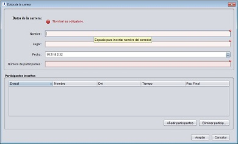

DATOS DE LA CARRERA

Características:
Desde la pantalla carrera disponemos de los campos necesarios para poder crear una nueva carrera en la aplicación, además puede
manejar los participantes en este momento o realizarlo posteriormente desde la pantalla lista carreras, pudiendo añadirlos
desde un listado de corredores dados de alta,o eliminarlos.
Elementos necesarios:
Campos:
- Nombre:
Espacio donde se debe escribir el nombre de la carrera.
- Lugar:
Espacio donde se debe indicar el lugar donde se disputará la misma.
- Fecha:
Debe seleccionar la fecha de celebración de la carrera.
- Número de participantes:
Espacio donde se debe escribir el número de participantes que tomarán
salida en la carrera.*
Detalle de acciones incluidas:
Tabla de participantes:
- Añadir participantes:
Despliega la pantalla lista corredores donde podremos seleccionar
un corredor de la lista y añadirlo como participante de la carrera.
- Eliminar participantes:
Permite eliminar el participante seleccionado en la tabla de participantes.
Adicional:
Dispone del botón "Aceptar" que añadira la carrera a la aplicación, y el botón "Cancelar" devolverá al usuario a la pantalla principal.